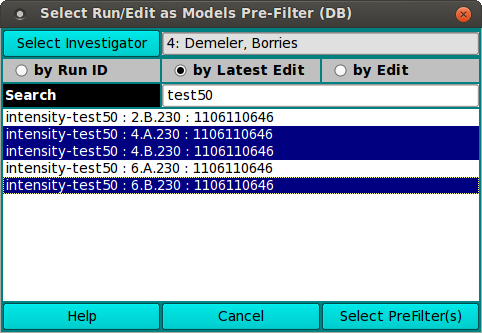

UltraScan Edit Pre-Filter for Model Loading:
A number of UltraScan III applications load model
distribution data for processing. For large-volume data bases, it helps
the speed of model list preparation to do a pre-filter of the model
data by editedData ID number or run ID. These applications use the
US_SelectEdits dialog class to allow the user to choose edits or runs with
which to filter model listings.
The dialog presented when a US_SelectEdits is executed allows a
list of edited data or raw (run) data choices from database or local disk.
A Search text field allows the list to be pared down to those of interest.
After one or more data sets are selected in the list, a button labelled
"Select PreFilter(s)" passes experiment data to the caller which passes
selections to the LoadModel Dialog.
|

|
-
Select Investigator This button brings up an
Investigator Dialog that allows
selecting the current investigator for whom to list runs/edits.
-
by Run ID Check this radio button to generate a list
of run IDs by which to filter models.
-
by Latest Edit Check this radio button to generate a list
of Run/Triple/Edit entries that are limited to the latest edits
of each triple and by which to filter.
-
by Edit Check this radio button to generate a list
of all Run/Triple/Edit entries by which to filter.
-
Search As characters are entered in the text box to the
right of the Search label, the list of data sets is modified to
consist of matching entries. A blank field restores the full
list. Note that the search is case-insensitive.
-
(run/edit list) This box holds the generated list of
runs or edits. You may select a single entry or multiple entries
using ctrl-click or shift-click in the normal way.
-
Help Click to bring up this documentation.
-
Cancel Click to close the dialog with no choices made.
-
Select PreFilter(s) Click to accept the choice(s)
highlighted in the data list and pass data back to the caller.
|
 Manual
Manual